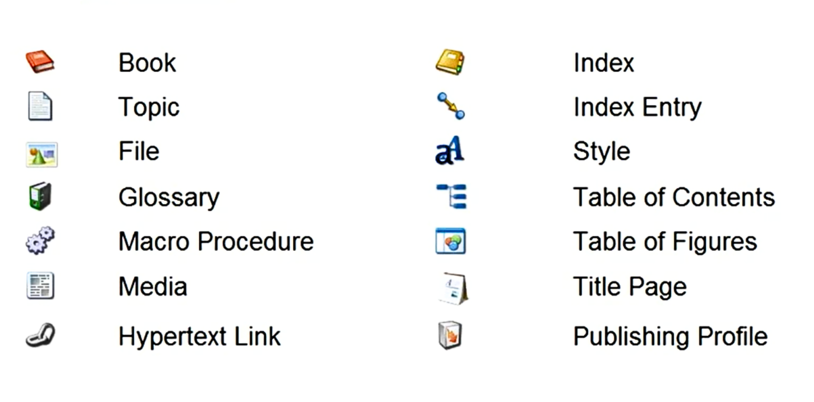

Library and Object Essentials
Understand how the Author-it Library stores and organizes content. Learn about object-oriented authoring, object properties, and how to manage library objects.
Author-it Library
The Library in Author-it functions as the central database for all content. It’s the foundation of CCMS, housing everything authors create and reuse.
- It is equivalent to a database that supports the Author-it application.
- Users interact only with the front-end library interface, not the actual database tables.
- It serves as the main content container for most authoring and publishing activities.
Types of Databases
Author-it supports two database types:
- SQL Server Library- Recommended for production.
- Scalable, stable, and supports enterprise-level backups.
- Jet Library- A simplified Access database.
- Suitable for training or testing, limited to 2 GB, and not recommended for production.
What the Library Holds
The Library stores most of the project data, but some elements are maintained externally:
- Publishing templates (.dot, .html)
- Graphics (can be stored externally for shared access)
Number of Libraries
- Maintain one production library for collaboration and content reuse.
- Optionally create a test or sandbox library (Jet or restored backup) for safe experimentation and template testing.
Working with Library Objects
Author-it’s strength lies in its object-oriented structure, where content is modular, reusable, and centrally managed.
What is an Object?
A document (e.g., user guide) is broken down into smaller, self-contained components called objects, such as:
- Title Page
- Table of Contents
- Topics
- Graphics
- Index
Object Reuse (Single-Source Advantage)
- Objects can be reused across multiple documents.
- Updating one object automatically updates all publications that use it.
- Each object type has a unique icon, helping users identify them visually.
Object Relationships and Publishing
- Book Object: A container that references other objects (topics, graphics, etc.) to form a complete publication.
- Single-Sourcing: One book can output to formats like Word, PDF, HTML, Help, XML, or DITA.
- When published, all related objects are rendered into the final document.
Object Properties and Identification
Every object in Author-it shares universal properties that help maintain organization, control, and consistency.

Figure 3: The object properties dialog
- Object Code
- A unique, auto-incremented identifier for each object.
- Never reused after removal and helpful for searching or linking.
- Object Name (Description)
- The internal name required for saving objects.
- Not visible in published outputs.
- Teams can define naming conventions for consistency.
- Object Template
- Created by Designers to enforce layout and styling rules.
- Assigns predefined properties automatically for consistency.
- Can be reassigned later if needed.
- Output Checkboxes
- Defines which outputs the object will publish to:
- Print (Word/PDF)
- Help (CHM/Help systems)
- Web (HTML/XHTML)
- Disabling an output excludes it from that publication type.
- Defines which outputs the object will publish to:
- Version Control & Edit History
- Tracks version and revision history.
- Allows authors to review changes or revert to previous versions.
Viewing and Managing Objects
The Objects List Area provides a clear, navigable view of all objects within a selected folder.
Figure 4: Author-it UI icons with their names for quick identification
Object List Overview
- Displays all objects within the selected folder.
- Each object has a distinctive icon (Book, Topic, File, etc.).
- Icons can be cross-referenced using the Author or Design Ribbons for easier identification.
Object Home Address
- Every object resides in one folder - its “home address.”
- Moving an object to another folder changes its location but doesn’t affect relationships with books or topics.
Object Preview Feature
- The preview pane allows a quick-look of the object content without fully displaying it.
- Users can switch between Print, Help, and Web tabs to preview format-specific variations.